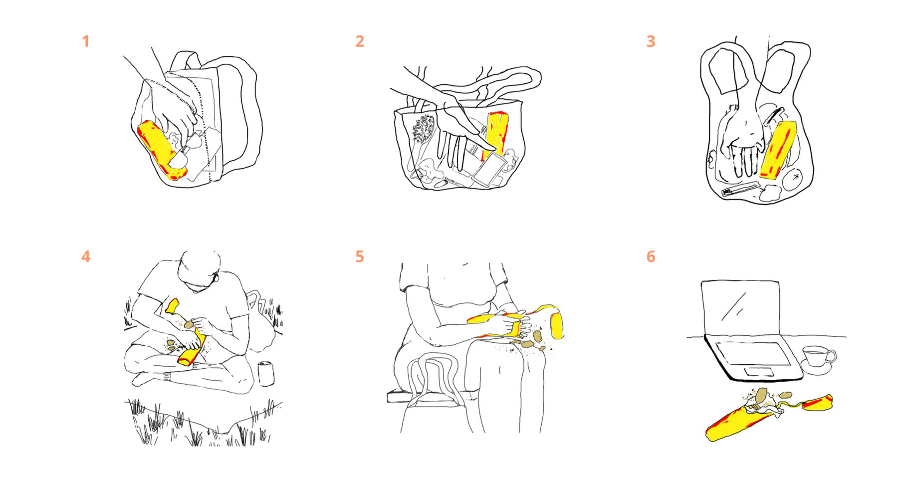
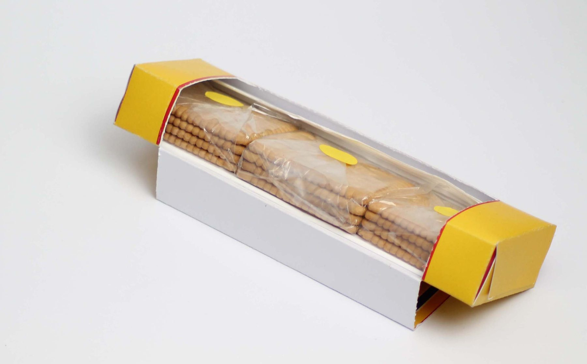
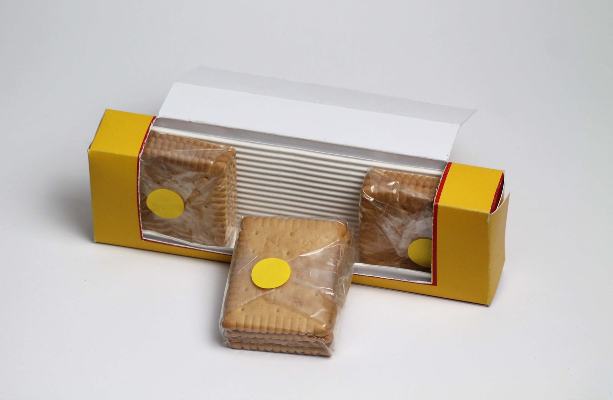

Take & Share is a packaging for the Leibniz butter biscuit. The name is the focus I chose after mapping how people use the biscuits on the go: they take them along, and they share them. It protects the biscuits, keeps them fresh in small portions, and opens up into a display so they can be shared.
The brief
The project was a cooperation between HTW Berlin and Bahlsen, the company behind Leibniz. The aim was to counteract food waste.
Working with Leibniz
I designed the packaging on my own, as part of an HTW Berlin course run together with Leibniz. As a group of students we visited Leibniz’s production facilities to see how the biscuits are made and packed, so I could adapt the design to their existing machines. Leibniz also gave us input on their materials, history and typography, which shaped the visual identity I presented to them.
Research
I used universal design thinking to look at how people really use the product, through user interviews and user journey mapping. My research showed that people want to take Leibniz biscuits with them during the day. It is a comfort snack that fits many contexts, from the office to sharing with others. But people often end up throwing the biscuits away, because it is hard to keep them fresh and undamaged once they leave the house. Mapping how people use the biscuits on the go led me to my focus, and to the project’s name: Take & Share.
These were the pain points I found in the existing packaging:
- Fragility: the packaging failed to protect the biscuits, which often broke.
- Freshness: once opened, the biscuits quickly lost their crispness unless moved to another container.
- Portability: the size and quantity made it cumbersome to carry.
- Reusability: the opening tore easily, making resealing difficult.
- Spillage: once opened, biscuits could spill inside a bag.
- Brand recognition: users strongly associated the brand colors with childhood memories.
- Social sharing: in groups the biscuits were commonly shared, as most people in Germany grew up with Leibniz.

Design
My main goal was to address food waste and transportability while minimizing material. The packaging reduces plastic to the bare minimum that food industry regulations allow.
Portion-controlled packs keep biscuits from going soft and cut waste, and the resource-efficient folding system works with existing production machinery. Rigid cardboard protects the product; a resealable sticker opening makes it easy to carry and lets the lid flip back into an attractive display for sharing. The original visual identity and colors were kept, respecting users’ emotional connection to Leibniz.


Result
The way the packaging opens up into a display was received very positively by the Leibniz cooperation partners. Take & Share improves convenience, durability and usability while keeping the brand’s nostalgic appeal.
Learnings
Food safety regulations require some plastic in food packaging, and a large part of the project was learning to work within those guidelines. Even so, there is a lot of room to reduce food waste: packaging that protects the biscuits on the go and keeps them fresh means fewer of them end up in the bin.
On sustainability, I learned that you can keep plastic to the minimum while still meeting food safety rules, and that a layout designed as a single cut, foldable format cuts material waste in production.